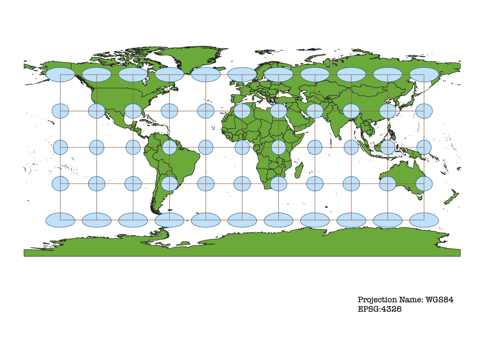
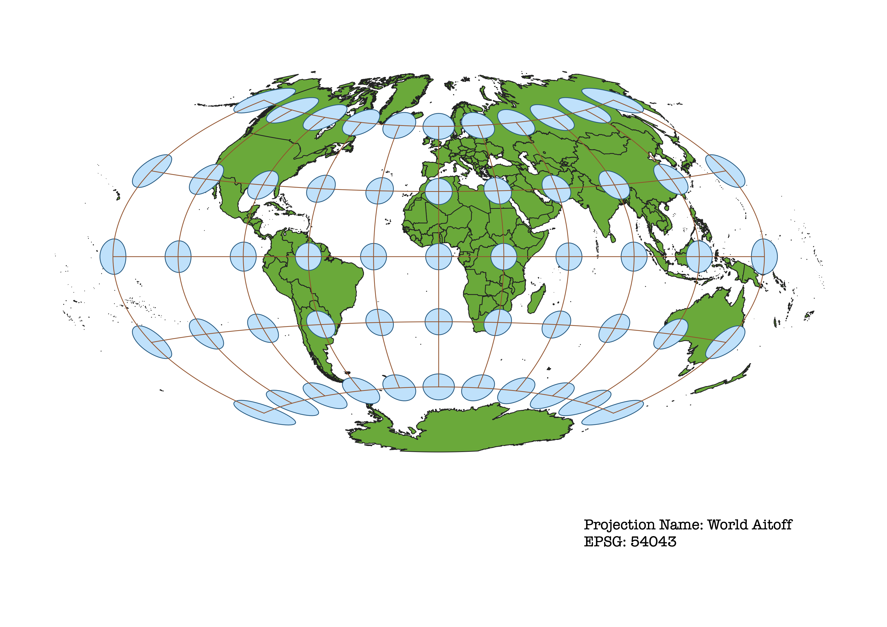
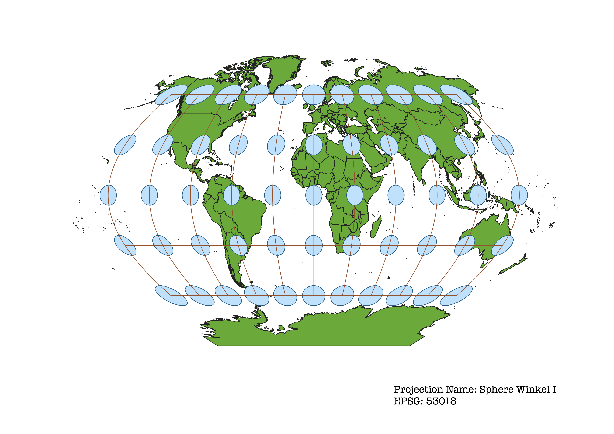
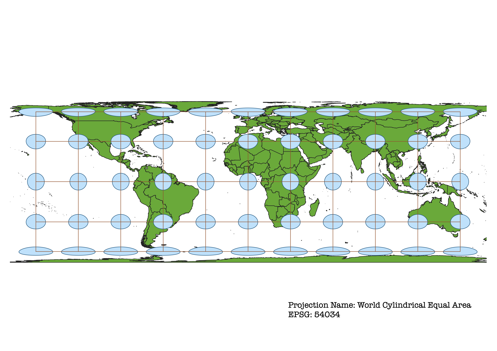
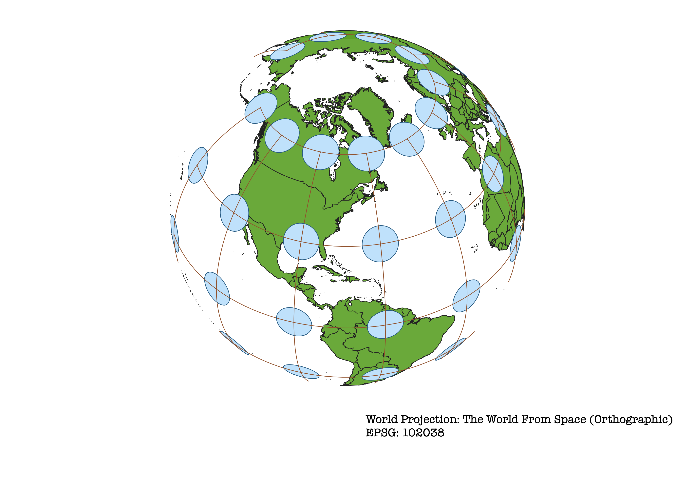
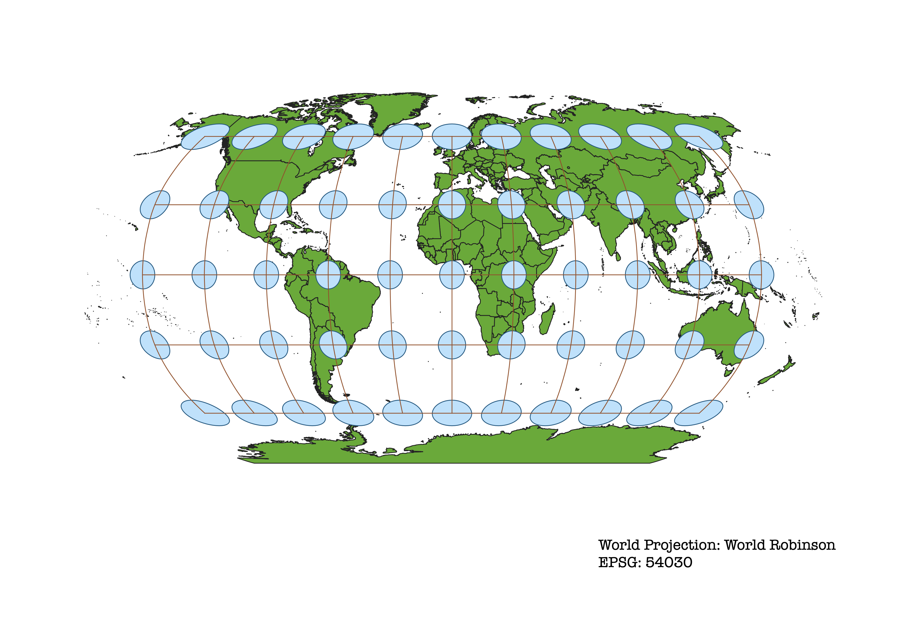

In this project I learned how to display images in different projections
Describe in your own words how you displayed the map in different projections using QGIS
Building on the lessons from Section I, in which we created maps and downloaded them as images, I used various Coordinate Reference System projections along with the Indicatrix plug-in to show the distortions of each projection. Initially I downloaded the data from the class website in organized folders. Then I made sure the Indicatrix plug-in was active in QGIS. After changing the colors in the map, I created a print layout for each projection and downloaded them as images (a .png file). These images are displayed on this webpage which was coded in Visual Code Studio and transformed into a website through GitHub. I created the repository by accessing GitHub on the internet, and updateed the webpage through the GitHub desktop application. This page is a "master branch" that I can commit code to in my "GEOG370_Spring2021" Repository and push to the origin, which allows anyone to view the webpage.
WGS84 Projection
This projection preserves shapes and angles, while noticeably distorting area. This makes it best-used for small areas. This projection is standard for GPS, since accurate angles and directon are important for navigational purposes.

Pseudo-Mercator
This map projects the WGS84 coordinate system onto a square. It is useful for visualization on computers, but not suited for storing data.

Aitoff Projection
This projection is best for small-scale maps, since shape, area, distance, and direction are all somewhat distorted. This projection is scaled accurately only along the Prime Meridian and the Equator.

Sphere Winkel I
This is a compromise projection. Area, direction, and shape are each somewhat distorted. It is suited only for coordinates that reference a sphere. It could be suited for general purposes, when none of these exact details are necessary.

World Cylindrical Equal Area
This projection preserves area while distorting shape and angles. For example, although the size of Greenland is now accurately 1/14 the size of Africa, it is vertically compressed and horizonatally stretched to fit onto a continuous 2D surface. A map that preserves area could be useful in measurements of deforestations, which use units of area.

World Equidistant Conic
This projection preserves distance along meridians, while distorting area, directions, and angles. This map would be best for land that is east-west oriented and is at mid-latitudes.

North Pole Azimuthal Equidistant
This projection preserves distance and direction, while distorting area and angles. Since distance is preserved, this projection may be useful for showing the relative length of different flights. However, distance is only preserved to and from the center of the map. Distances from any two points outside of the center are distorted.

The World From Space
This orthographic map is used by Google Earth. It almost appears as though it is a picture of the Earth from space.

World Robinson
This is a compromise projection. Area, distance, and direction are all distorted. However, each distortion is very limited over most of the map. Distortion occurs most around the poles and edges. It is considers visually-appealing by many. It is suited for general purposes, like perhaps teaching some historical events, when exact details are not necessary.
